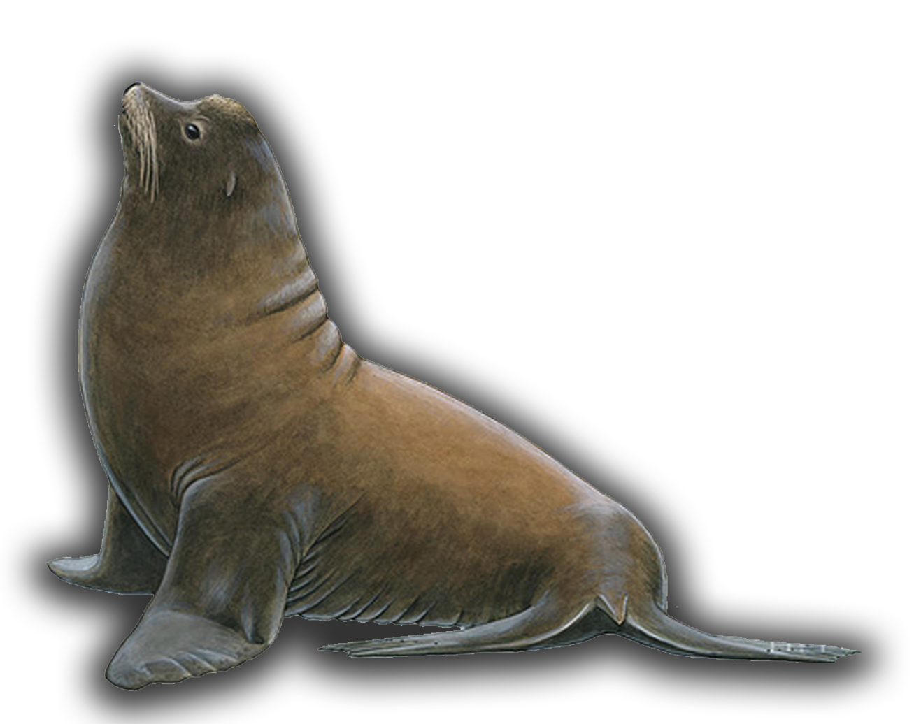
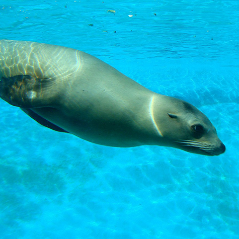
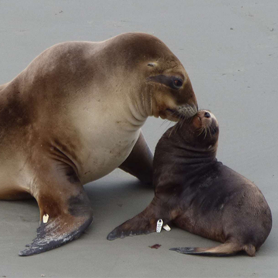
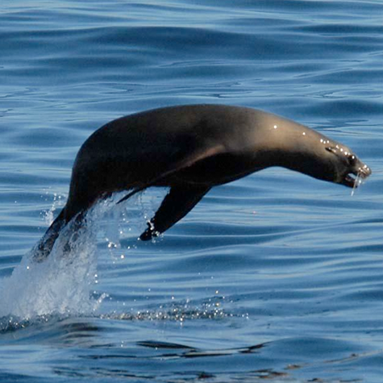
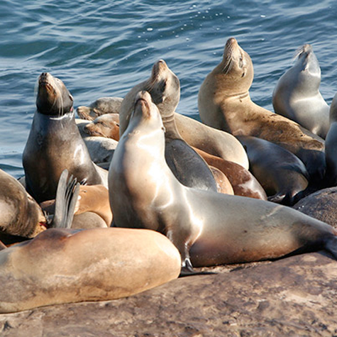

<!DOCTYPE html>
<html>
  <head>
    <meta charset="utf-8" />
    <title></title>
  </head>
  <body></body>
</html>
<!DOCTYPE html>
<html>
  <head>
    <meta charset="utf-8" />
    <title></title>
    <link rel="stylesheet" href="../CSS/sea lion.css" />
  </head>
  <body>
    <div id="container">
      <div class="H1">
        <h1>California Sea Lion</h1>
      </div>
      <p class="p1">(Zalophus californianus)</p>
      <p class="p2">
        The California Sea Lion is known for their playfulness, intelligence, and loud barking. Before colonization, there were so many on the shore that you couldn’t see the sand or rocks below them.
      </p>
      <p class="p3">
        They have a ‘dog-like’ face and are known as part of the walking seal family. The males develop a bump on their heads while the females do not. Being able to switch from land and sea, the sea lion is a really interesting person. They can slow their heart rate in the ocean to be able to hunt for fish underwater for about 10 minutes and can stay out in sea for 2 weeks. They feed on squid, fish, clams, and even the bat ray. They are titled as the least concern for extinction or endangerment. Their population is actually on the rise since California has stated their protection over them in 1972.

      </p>
      <!-- <p class="p4">
        During their bloom season, many people gather in Antelope Valley, Bear
        Valley, and Point Buchon to see acres of stunning orange flowers. In
        Ohlone culture, the poppy was placed under the bed to aid children with
        insomnia. They also boiled the plant to rid others of head lice. In Pomo
        culture, they used mashed poppy seed pods to stop nursing.
      </p> -->
    </div>
    
    <div id="container2">
      
      
      
      
      <a
        href="https://anti-rocker.github.io/This-land-before-it-was-found/"
        class="link"
      ></a>
    </div>
  </body>
</html>
